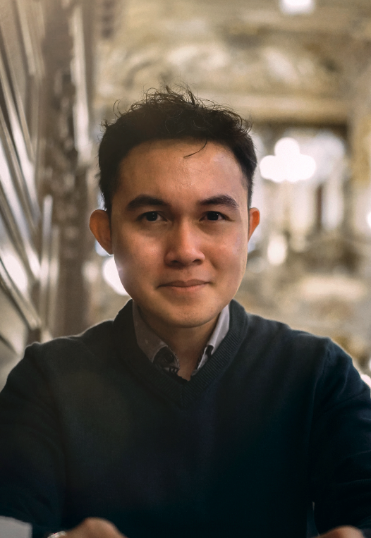

Hi, I'm Aiman Syafiq. I'm 27, Bruneian, fresh out of a PhD at Cambridge, and now a Public Health Officer at the Ministry of Health, Brunei Darussalam.
Scientist-engineer by training, but I've always been comfortable working across disciplines. My PhD at Cambridge focused on radiomics — extracting quantitative features from medical images like PET scans to help characterise tumours and inform clinical decisions. A few papers came out of my time at Cambridge — systematic reviews and cancer image analysis work.
I currently work as a Public Health Officer at the Ministry of Health, Brunei Darussalam. I'm particularly interested in how data and AI can strengthen public health systems and decision-making.
Alongside research and work, I make films, animated explainers, books, and logos. Science communication has always felt like part of the job, not separate from it — if it doesn't reach people, it doesn't matter.
